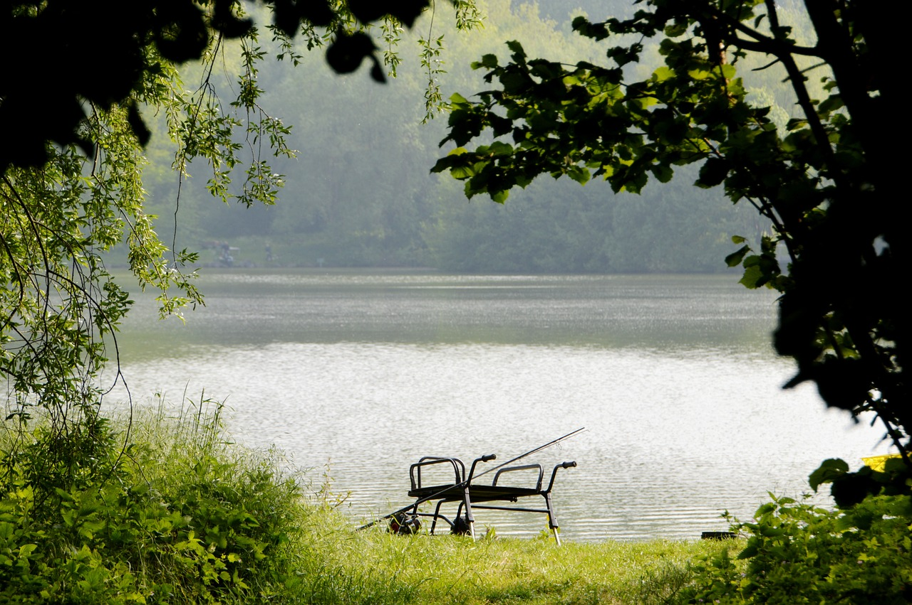
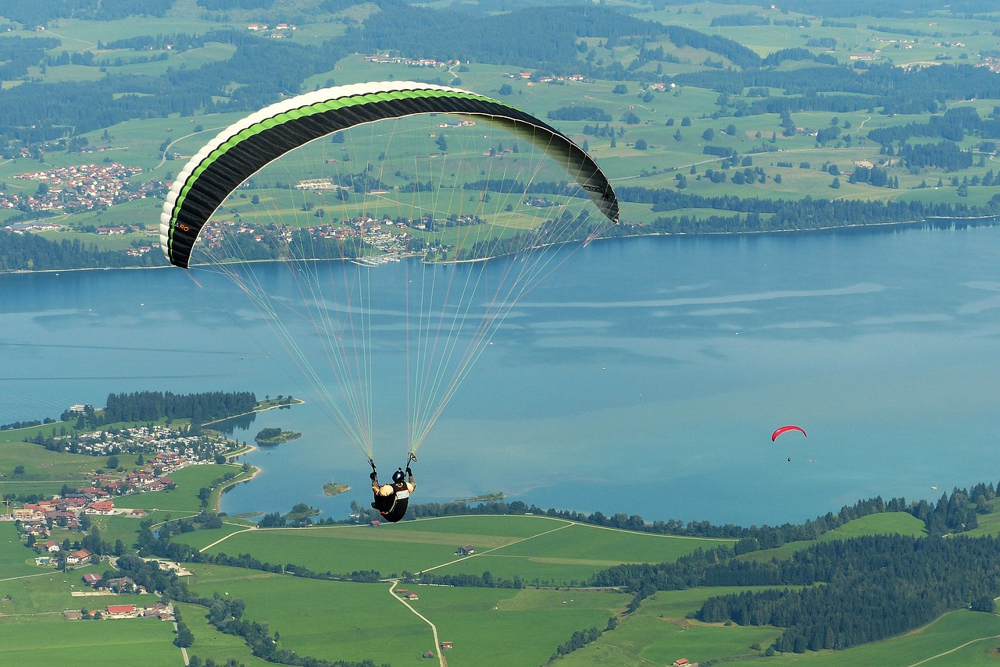

| Boyaca | Antioquia |
|  |  |
Principales lugares para conocer en Boyacá. Museos, parques, atractivos turísticos y todos los pueblos que debes visitar en Boyacá. Escalada Tours Escapadas de pesca Salir en beiculos todo terrenos Parpente para mas informacion ingresar al enlace Boyaca |
En Antioquia podemos realizar diferentes acciones como Escalada Tours Escapadas de privadas Salir en beiculos todo terrenos Para mas informacion ingresar al enlace Antioquia |
| Nariño | Santander |
|  |  |
Nariño Santuario de Las Lajas. 861. La Laguna de la Cocha. 545. Casa Museo Taminango. Museos especializados. Volcán Cumbal. Volcanes. Escalada Tours Escapadas caminatas Salir en beiculos todo terrenos Para mas informacion ingresar al enlace Nariño |
Parque Nacional de Chicamocha. Cascada de Juan Curi. Camino Real. Escalada Tours Escapadas por las ciudades Salir en beiculos todo terrenos Para mas informacion ingresar al enlace Santander |